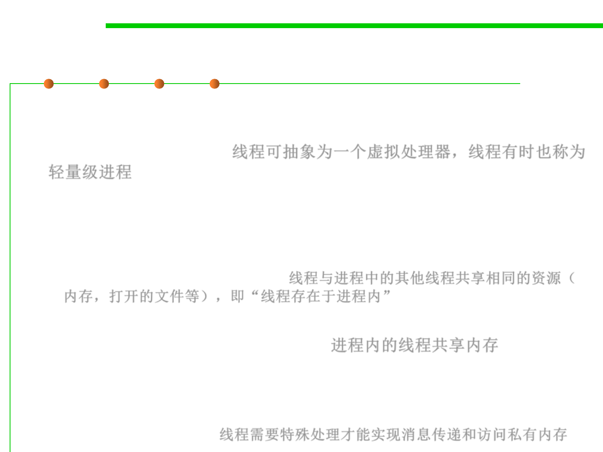

10.1 Concurrency and Thread-Safety
Thread and Multi-threaded programming
▪ Just as a process represents a virtual computer, the thread abstraction
represents a virtual processor, and threads are sometimes
called lightweight process 线程可抽象为一个虚拟处理器，线程有时也称为
轻量级进程
– Making a new thread simulates making a fresh processor inside the virtual
computer represented by the process.
– This new virtual processor runs the same program and shares the same
resources (memory, open files, etc) as other threads in the process, i.e.,
“threads exist within a process”. 线程与进程中的其他线程共享相同的资源（
内存，打开的文件等），即“线程存在于进程内”
▪ Threads are automatically ready for shared memory, because threads
share all the memory in the process. 进程内的线程共享内存
– It takes special effort to get “thread-local” memory that’s private to a single
thread.
– It’s also necessary to set up message-passing explicitly, by creating and using
queue data structures. 线程需要特殊处理才能实现消息传递和访问私有内存